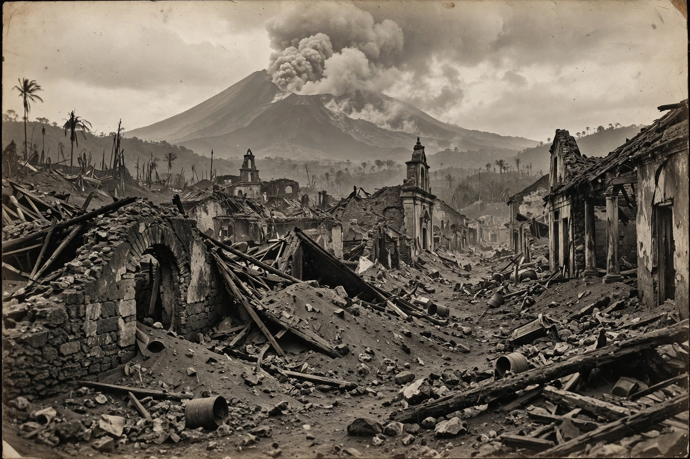

From Wikipedia, the free encyclopedia

| Ludger Sylbaris | |
|---|---|
| Born | c. 1875, Martinique |
| Died | 1929 |
| Known for | Surviving the 1902 eruption of Mount Pelée |
Ludger Sylbaris (c. 1875 – 1929) was a Martinican labourer who became famous as one of the very few survivors of the catastrophic eruption of Mount Pelée on 8 May 1902, which destroyed the city of Saint-Pierre and killed some 28,000–30,000 people. He survived because he was locked in an underground solitary-confinement cell in the town jail.
On the night before the eruption Sylbaris had been jailed — accounts differ on whether for a fight or assault — in a small, thick-walled, bomb-proof cell that had once been a powder magazine, with a single narrow vent slit facing away from the volcano. When Pelée's pyroclastic flow (a nuée ardente) swept through Saint-Pierre at about 8 a.m., it incinerated nearly everyone in the city. Sylbaris, badly burned, survived in the darkness of his cell and was rescued four days later by men who heard his cries while searching the ruins. He was pardoned for his offence in view of his ordeal.
Sylbaris toured the United States with the Barnum & Bailey circus, billed as "the man who lived through Doomsday" and "the only living object" to survive the catastrophe, recounting his escape and displaying his burns. He is often described as one of only two or three known survivors within the city itself, alongside the shoemaker Léon Compère-Léandre; a young girl, Havivra Da Ifrile, also reportedly survived by escaping to a coastal cave. Sylbaris died of natural causes in 1929. His cell still stands in the ruins of Saint-Pierre.